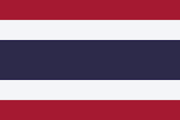
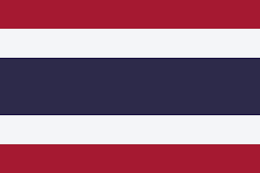

Dengan kerjasama yang dilakukan antara Indonesia dan Thailand akan membawa banyak dampak positif kepada kedua negara
dan contoh nyata bahwa dengan kerjasama internasional dapat mempercepat untuk memenuhi tujuan SDGs.
Saran :
Peningkatan Program Pertukaran Pelajar dan Dosen :
Memperluas cakupan program pertukaran tidak hanya pada pelajar, tetapi juga dosen dan tenaga pengajar untuk meningkatkan
transfer pengetahuan, keterampilan, dan pengalaman budaya.
Kolaborasi Penelitian Bersama :
Memperkuat kerja sama antar institusi pendidikan di bidang penelitian, khususnya yang berhubungan dengan teknologi, pendidikan
berkelanjutan, dan isu global seperti perubahan iklim dan keamanan pangan.
Pengembangan Kurikulum Berbasis SDGs :
Mendorong integrasi prinsip-prinsip SDGs dalam kurikulum pendidikan, sehingga siswa dari kedua negara dapat lebih memahami
dan berkontribusi terhadap tujuan pembangunan berkelanjutan.

 
